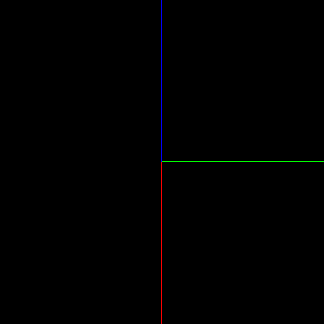
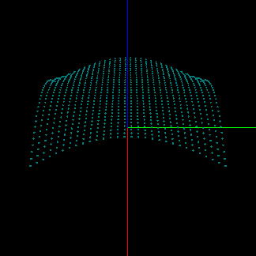

Dmitry Kurtaev/ C++: Grid surface using heights map
Задача: изображение трёхмерной поверхности, заданной на сетке.
Пример: с использованием C++, freeglut.
Языки:
RU
Пусть в пространстве (x, y, z) задана сеточная функция: узлы в плоскости (x, y)
и значения высот (координат z) для каждого из узлов.
Подготовка
Сделаем основание для будущей работы: отобразим координатные оси.
Для ориентации в трехмерном пространстве, отобразим координатные оси.
Плоскость координат (x, y) будем считать осонованием, а по оси координат z
откладывать значения функции, задающей поверхность.
Перед началом рисования, необходимо задать положение камеры в пространстве.
void draw_axises() {
// Ox is red, Oy is blue, Oz is green.
glBegin(GL_LINES);
glColor3ub(255, 0, 0);
glVertex3f(0.0f, 0.0f, 0.0f);
glVertex3f(100.0f, 0.0f, 0.0f);
glColor3ub(0, 255, 0);
glVertex3f(0.0f, 0.0f, 0.0f);
glVertex3f(0.0f, 100.0f, 0.0f);
glColor3ub(0, 0, 255);
glVertex3f(0.0f, 0.0f, 0.0f);
glVertex3f(0.0f, 0.0f, 100.0f);
glEnd();
}

Задание поверхности
^ y
y3 | *-----*-----*-----*-----* min_x = x0; max_x = x4
| | | | | | min_y = y0; max_y = y3
| | | | | | n_nodes_by_x = 5
| | | | | | n_nodes_by_y = 4
y2 | *-----*-----*-----*-----*
| | | | | |
| | | | | |
| | | | | |
y1 | *-----*-----*-----*-----*
| | | | | |
| | | | | |
| | | | | |
y0 | *-----*-----*-----*-----*
+-------------------------------> x
x0 x1 x2 x3 x4
|
^ z
|
|
f(x3, y1) |
@ f(x1, y0) |
| @ |
| | |
x4 | x3 x2 | x1 x0 |
x <------|--------------|---------+
*--|--*-----*-----*-----* / y0
/ | / / / / /
/ |/ / @ f(x1, y2) /
*-----*-----*--|--*-----* / y1
/ / / | / / /
/ / / |/ / /
*-----*-----*-----*-----* / y2
/ / / / / /
/ / / / / /
*-----*-----*-----*-----* / y3
y v
|
Для описания поверхности как множества точек пространства (x, y, z), зададим
равномерную сетку в плоскости (x, y). Сетка называется равномерной, если
расстояние между соседними узлами, вдоль каждой из осей, не изменяется.
В каждом из узлов известна координата z как функция от (x, y): z = f(x, y).
Будем называть это значение высотой. Множество значений высот для всех узлов
сетки будем называть картой высот.
Поверхность как множество точек
Создадим некоторую поверхность по известному закону f(x, y). Для начала,
изобразим точки поверхности сферами.
class Surface {
public:
Surface(float min_x, float max_x, float min_y, float max_y,
int n_nodes_by_x, int n_nodes_by_y);
~Surface();
void Draw();
private:
float* heights;
float min_x;
float min_y;
int n_nodes_by_x;
int n_nodes_by_y;
float step_by_x;
float step_by_y;
};
|
Surface::Surface(float min_x, float max_x, float min_y, float max_y,
int n_nodes_by_x, int n_nodes_by_y) {
this->min_x = min_x;
this->min_y = min_y;
this->n_nodes_by_x = n_nodes_by_x;
this->n_nodes_by_y = n_nodes_by_y;
step_by_x = (max_x - min_x) / (n_nodes_by_x - 1);
step_by_y = (max_y - min_y) / (n_nodes_by_y - 1);
heights = new float[n_nodes_by_x * n_nodes_by_y];
for (int i = 0; i < n_nodes_by_y; ++i) {
for (int j = 0; j < n_nodes_by_x; ++j) {
float x = min_x + j * step_by_x;
float y = min_y + i * step_by_y;
heights[i * n_nodes_by_x + j] = cos(x * y / M_PI);
}
}
}
|

|
void Surface::Draw() {
glColor3ub(0, 127, 127);
for (int i = 0; i < n_nodes_by_y; ++i) {
for (int j = 0; j < n_nodes_by_x; ++j) {
float x = min_x + j * step_by_x;
float y = min_y + i * step_by_y;
glPushMatrix();
glTranslatef(x, y, heights[i * n_nodes_by_x + j]);
glutSolidSphere(0.02, 10, 10);
glPopMatrix();
}
}
}
|